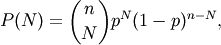
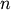
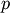

numpy.random.binomial¶
- numpy.random.binomial(n, p, size=None)¶
Draw samples from a binomial distribution.
Samples are drawn from a Binomial distribution with specified parameters, n trials and p probability of success where n an integer > 0 and p is in the interval [0,1]. (n may be input as a float, but it is truncated to an integer in use)
Parameters : n : float (but truncated to an integer)
parameter, > 0.
p : float
parameter, >= 0 and <=1.
size : {tuple, int}
Output shape. If the given shape is, e.g., (m, n, k), then m * n * k samples are drawn.
Returns : samples : {ndarray, scalar}
where the values are all integers in [0, n].
See also
- scipy.stats.distributions.binom
- probability density function, distribution or cumulative density function, etc.
Notes
The probability density for the Binomial distribution is

where  is the number of trials,  is the probability of success, and
 is the number of successes.
is the number of successes.When estimating the standard error of a proportion in a population by using a random sample, the normal distribution works well unless the product p*n <=5, where p = population proportion estimate, and n = number of samples, in which case the binomial distribution is used instead. For example, a sample of 15 people shows 4 who are left handed, and 11 who are right handed. Then p = 4/15 = 27%. 0.27*15 = 4, so the binomial distribution should be used in this case.
References
[R63] Dalgaard, Peter, “Introductory Statistics with R”, Springer-Verlag, 2002. [R64] Glantz, Stanton A. “Primer of Biostatistics.”, McGraw-Hill, Fifth Edition, 2002. [R65] Lentner, Marvin, “Elementary Applied Statistics”, Bogden and Quigley, 1972. [R66] Weisstein, Eric W. “Binomial Distribution.” From MathWorld–A Wolfram Web Resource. http://mathworld.wolfram.com/BinomialDistribution.html [R67] Wikipedia, “Binomial-distribution”, http://en.wikipedia.org/wiki/Binomial_distribution Examples
Draw samples from the distribution:
>>> n, p = 10, .5 # number of trials, probability of each trial >>> s = np.random.binomial(n, p, 1000) # result of flipping a coin 10 times, tested 1000 times.
A real world example. A company drills 9 wild-cat oil exploration wells, each with an estimated probability of success of 0.1. All nine wells fail. What is the probability of that happening?
Let’s do 20,000 trials of the model, and count the number that generate zero positive results.
>>> sum(np.random.binomial(9,0.1,20000)==0)/20000. answer = 0.38885, or 38%.